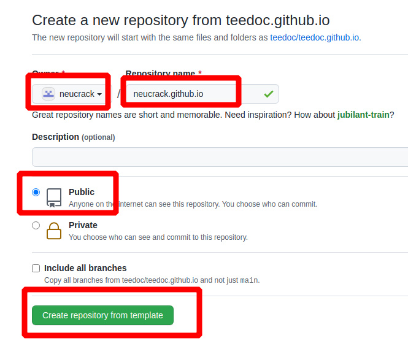
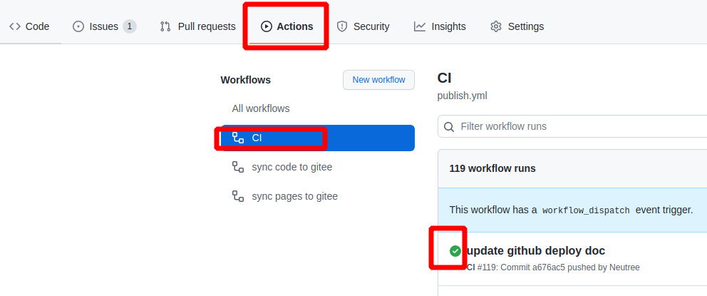
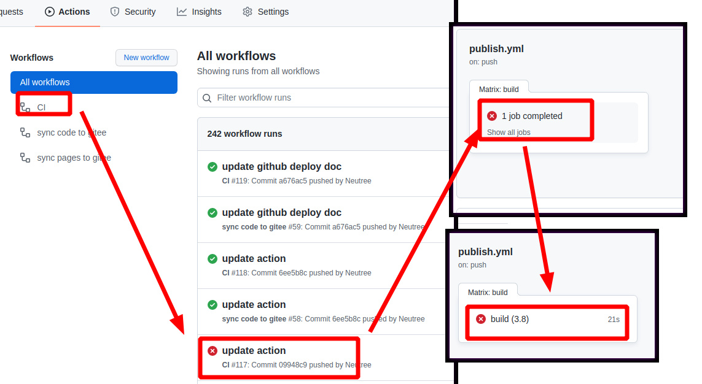
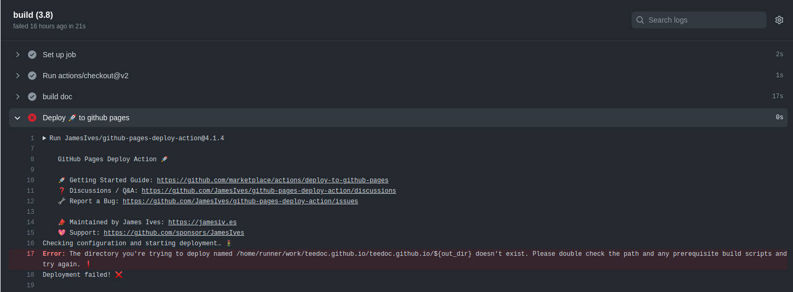

teedoc 安装使用
安装 python3
需要先安装Python3 （仅支持 Python3）
比如在Ubuntu上：
sudo apt install python3 python3-pip git
Windows 和 macOS请到官网下载
安装 teedoc
打开终端(Windows按Ctrl+R输入cmd)，输入：
pip3 install teedoc
以后使用以下命令来更新软件：
pip3 install teedoc --upgrade
如果你的网络使用
pypi.org速度很慢，可以选择其它源，比如清华 tuna 源：pip3 install teedoc -i https://pypi.tuna.tsinghua.edu.cn/simple
现在你可以在终端使用 teedoc 命令了
如果不能，请检查是不是Python可执行目录没有加入到环境变量 PATH,
比如可能在 ~/.local/bin
新建工程
新建一个空目录用来放文档工程
mkdir my_site
cd my_site
teedoc init
或者
teedoc -d my_site init
选择1，也就是minimal模板进行生成， 也可以直接teedoc -d my_site --template=minimal init进行生成
这会在 my_site 目录下自动生成一些基础文件
另外，除了使用init命令生成一份最小工程，你也可以获得一份官网文档源码，基于这个文档内容修改
git clone https://github.com/teedoc/teedoc.github.io my_site
或者
git clone https://gitee.com/teedoc/teedoc.gitee.io my_site
安装插件
这会根据site_config.json中的plugins的插件设置安装插件
cd my_site
teedoc install
插件也是以
python包的形式发布的， 所以这会从pypi.org下载对应的插件，同样，也可以使用其它源，比如清华 tuna 源：teedoc -i https://pypi.tuna.tsinghua.edu.cn/simple install
构建 HTML 页面并起一个HTTP服务
teedoc serve
这个命令会先构建所有HTML页面以及拷贝资源文件，然后起一个HTTP服务
如果只需要生成页面，使用
teedoc build
在显示 Starting server at 0.0.0.0:2333 .... 后，就可以了
打开浏览器访问: http://127.0.0.1:2333
同时可以看到目录下多了一个out目录，里面就是生成的静态网站内容，直接拷贝到服务器使用nginx或者apache进行部署即可
在 github 上基于模板仓库创建新仓库 并使用 pages 服务快速创建网站
使用 teedoc 官网模板, 使用 github pages 功能, 可以快速创建一个属于你自己的网站, 不需要自己搭建和维护服务器, 不需要自己部署 HTTPS 证书, 也不需要任何密钥配置, 3 分钟内就可以完成.
不过 github pages 服务也有缺点, 就是中国国内某些网络线路可能无法访问
基于模板创建仓库
- 访问 https://github.com/teedoc/template 或者 https://github.com/teedoc/teedoc.github.io， 点击
Use this template

- 设置新仓库的名字为
用户名或者组织名.github.io, 选择公开仓库, 然后确认提交

之后使用
git clone 你的仓库地址就可以克隆到本地了
设置 pages 服务
- 等待自动构建生成新的分支
gh-pages, 可以点击Actions栏目查看自动构建的进度, 如果有绿色的勾勾出现了就代表可以了, 如果出现了红色的叉叉则是构建失败了, 哪里出了什么问题, 可以按照下面的截图方法点进去查看日志(提交问题必须要日志截图)并提交 issue 反馈

如果有错误, 可以按照下图点进去查看错误日志:


- 设置仓库的
pages服务, 选择gh-pages分支, 如果没有这个分支, 则是上一步还没进行完或者出错了,可以查看问题提交 issue 反馈

- 然后访问
用户名或者组织名.github.io, 就会发现有网页啦, 内容和teedoc.github.io的一模一样!